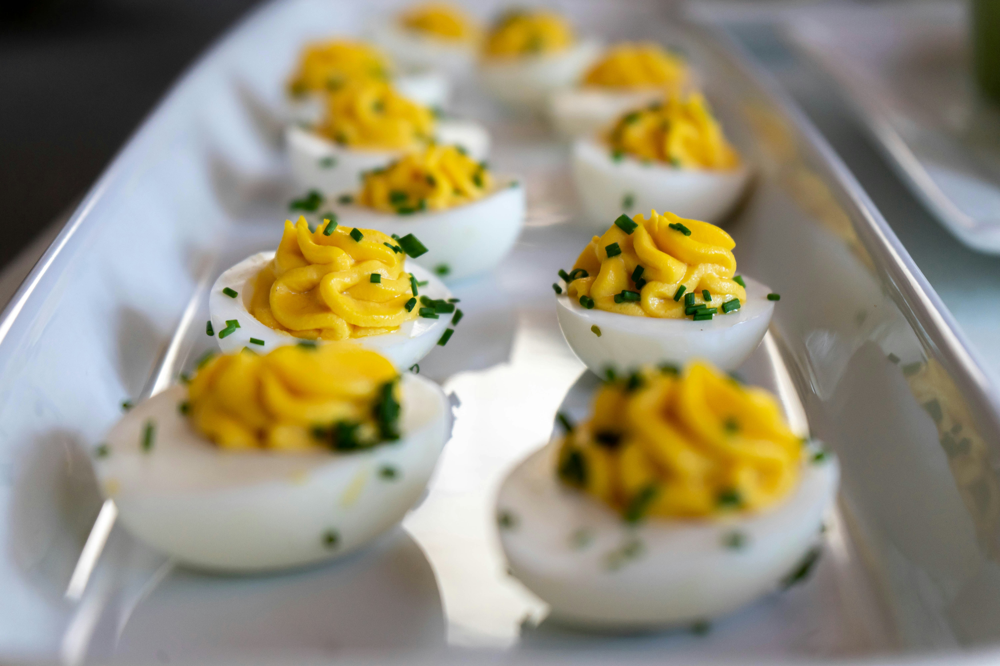

Lovely mac-n-cheese, (your outcome will not look like this) Photo by Hermes Rivera on Unsplash
Decription
Deviled eggs, are really nice hard boilled eggs, with the smooth silky egg yolk scooped out, and flavoured with the finest ingredients, made even silkyer with butter
Ingredients
12 large hard-boiled eggs, peeled
1/4 cup mayonnaise
2 tablespoons butter, softened to room temperature
2 teaspoons yellow mustard
51/2 teaspoon sriracha, or to taste
salt and freshly ground black pepper to taste
3 tablespoons crumbled crisp cooked bacon
papreka to taste
Steps
(If you havnt already, hardboil the eggs, and take off the shell) Slice eggs in half lengthwise. Remove egg yolks, and place in a bowl.
Add mayonnaise, butter, mustard, paprika, Sriracha, salt, and pepper to the yolks. Mash with a fork or use a small food processor until filling is very smooth and creamy.
Evenly scoop or pipe egg yolk mixture into each egg white. Top with bacon crumbles. Move to the refrigerator to chill or serve immediately.